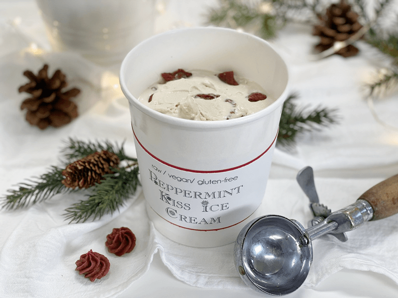
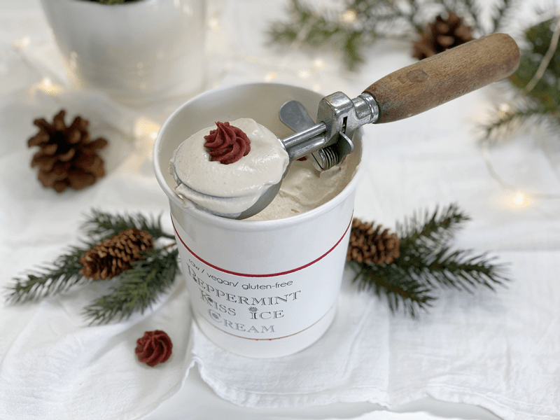
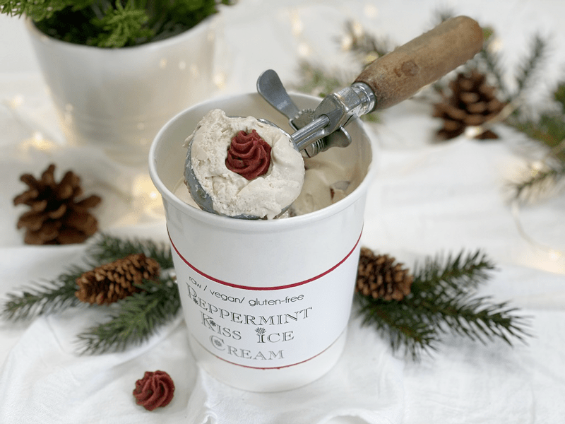
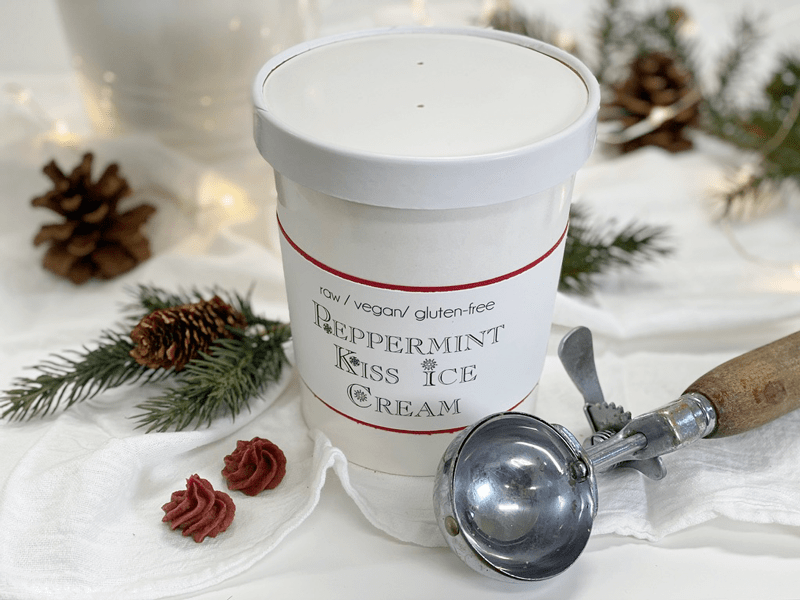

Peppermint Kiss Ice Cream
raw, vegan, gluten-free
Every scoop of Raw Peppermint Kiss Ice Cream is loaded with tasty raw peppermint candy pieces. Delicious any time of year, the ice cream is an especially welcome treat when served at winter holiday gatherings.

I choose to create vanilla-based ice cream, and I wanted the vibrant colors of white and red to pop for our Christmas gathering. You could easily add a few tablespoons of raw cacao powder to the vanilla base, making it chocolate-based ice cream. Or, you could add in raw cacao nibs giving it that extra crunchy texture and a chocolatey flavor.
I purposely chose not to add any additional peppermint extract or oil to the vanilla base because I find that the flavor of peppermint can be rather intense. The idea was for the raw peppermint kiss candies to highlight the vanilla flavor, giving each bite just a hint of peppermint.

As a personal preference, I don’t care for hard fruit pieces or candies to be in my ice cream. I like having different textures, but I find hard candies tend to stick in my teeth as the cream ice cream washes down my throat, leaving me to picking chunks of hard sugared candy out of my teeth. And frozen fruit chunks always seem sort of dry and flavorless to me. But these little kisses are perfect because they are made from date paste, which doesn’t freeze solid.
This way, the creamy vanilla ice cream coats your mouth, and at the same time, you get the chew of peppermint candy, which causes the flavors to intermix, giving you that one-bite-wonder. I am not a painter, but I am trying to paint a clear picture here of what you can expect from this treat. :) I could have just said it was excellent …. delicious … but what does that tell you?

Last night, we sat around the living room, playing games with the family. Mom got up to grab a single serving of the ice cream; she set it on the coffee table to let it warm up a bit before diving in. Before she knew it… my sister had snagged some, she moaned with pleasure, then handed a spoonful to her boyfriend, then a spoonful to my dad… Let’s just say that by the time mom even noticed that it was missing from her side, it was three-quarters of the way gone. Hehe, Good thing we had plenty to go around.
 Ingredients:
Ingredients:
Yields 1 quart
- 1 cup (180 g) cashews, soaked 2 + hours
- 1 1/3 cup (295 g) raw almond milk
- 1/3 cup (100 g)maple syrup
- 2 tsp (6 g) vanilla extract
- 1 squirt (1 g) liquid stevia
- 1/4 tsp (2 g) Himalayan pink salt
- 2 Tbsp (35 g) cold-pressed coconut oil, melted
- 1/2 cup raw peppermint kisses, diced if desired
Preparation:
- Place the cashews in a glass bowl, along with 4 cups of water.
- Soak for at least 2 hours.
- The soaking process will help reduce phytic acid, which will aid in digestion.
- The soaking also softens the cashews, so they blend nice and creamy.
- After the cashews are through soaking, drain, and rinse.
- In a high-powered blender, add almond milk, agave, vanilla, stevia, salt, cashews, and coconut oil. Blend until it is smooth and creamy.
- Due to the volume and the creamy texture that we are going after, it is essential to use a high-powered blender. It could be too taxing on a lower-end model.
- Blend until the filling is creamy smooth. You shouldn’t detect any grit. If you do, keep blending.
- This process can take 2-4 minutes, depending on the strength of the blender. Keep your hand cupped around the base of the blender carafe to feel for warmth if the batter is getting too warm. Stop the machine and let it cool. Then proceed once cooled.
- Place the blender carafe in the fridge for 1 hour to chill.
- Once chilled, pour the ice cream batter into the ice cream machine and follow your manufacturer’s instructions.
- When the ice cream is about 2 minutes from being done, add the peppermint kisses and mix until dispersed.
- Place in the freezer-safe containers and freeze. Or enjoy it right away as soft-serve ice cream.
- The ice cream will keep for about 2 weeks without losing flavor.
Freezing Suggestions for Ice Cream:
-
Use an ice cream machine. Follow the manufactures directions.
-
Freeze in popsicle molds or 3 oz Dixie cups with a popsicle stick inserted.
-
-
Store the ice cream in the very back of the freezer, as far away from the door as possible. Every time you open your freezer door you let in warm air. Keeping ice cream way in the back and storing it beneath other frozen-sold items will help protect it from those steamy incursions.
-
Ice cream is full of fat, and even when frozen, fat has a way of soaking up flavors from the air around it—including those in your freezer. To keep your ice cream from taking on the odors, use a container with a tight-fitting lid. For extra security, place a layer of plastic wrap between your ice cream and the lid.
-
To soften in the refrigerator, transfer ice cream from the freezer to the refrigerator 20-30 minutes before using. Or let it stand at room temperature for 10-15 minutes.
-
Wish to make your own raw ice cream, wonder what machine I might recommend, and more? Click (
here) to check out the Reference Library!

© AmieSue.com